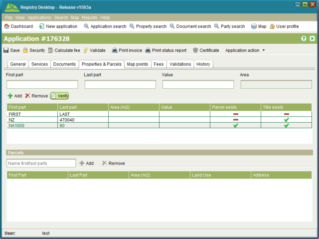

All applications that result in changes to the land register or cadastre information should reference the affected property or properties on the Property tab of Application Details. For land registration changes this will be the property being transacted upon. For survey applications, this will be the underlying property or properties that are being subdivided or amalgamated. Note that new parcels created by the plan should not be recorded here.
To verify if the property details provided by the agent match details recorded in Registry, use the Property tab.
To verify a property, you must add it to the application. On the Property tab, enter the
title reference (i.e. First part and Last part) in the fields provided and click  Add property. This will add the property to the list in the
bottom half of the tab and automatically verify its details. You can also verify a property
manually by selecting it from the list and clicking the
Add property. This will add the property to the list in the
bottom half of the tab and automatically verify its details. You can also verify a property
manually by selecting it from the list and clicking the Verify tool. To remove a
property added by mistake, select it and click the
Verify tool. To remove a
property added by mistake, select it and click the Remove tool.
Remove tool.

Application Details Property tab
If the title reference you entered exactly matches a property in the Registry database, the property will be flagged as Title Exists. If the property also has a spatial definition, it will be flagged as Parcel exists.
If the Title Exists checkbox is not checked, it may indicate the title reference is invalid or the title has yet to be converted from paper format. Use the Property Search screen and/or Map Find to attempt to locate the property record.